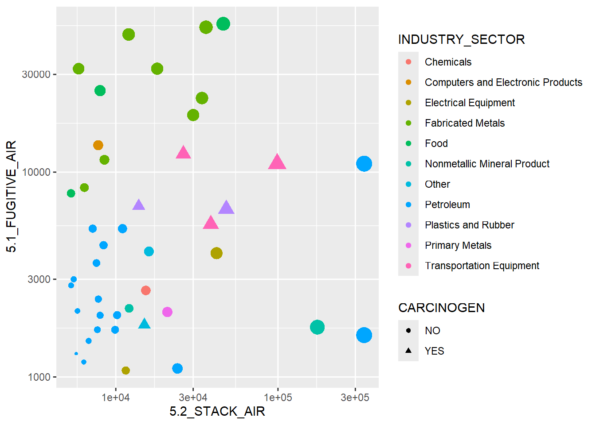
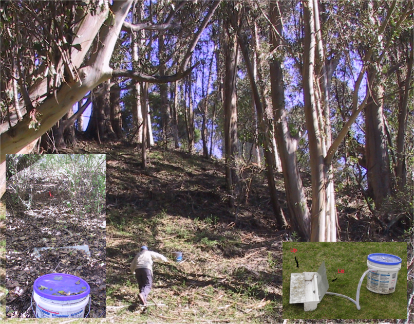
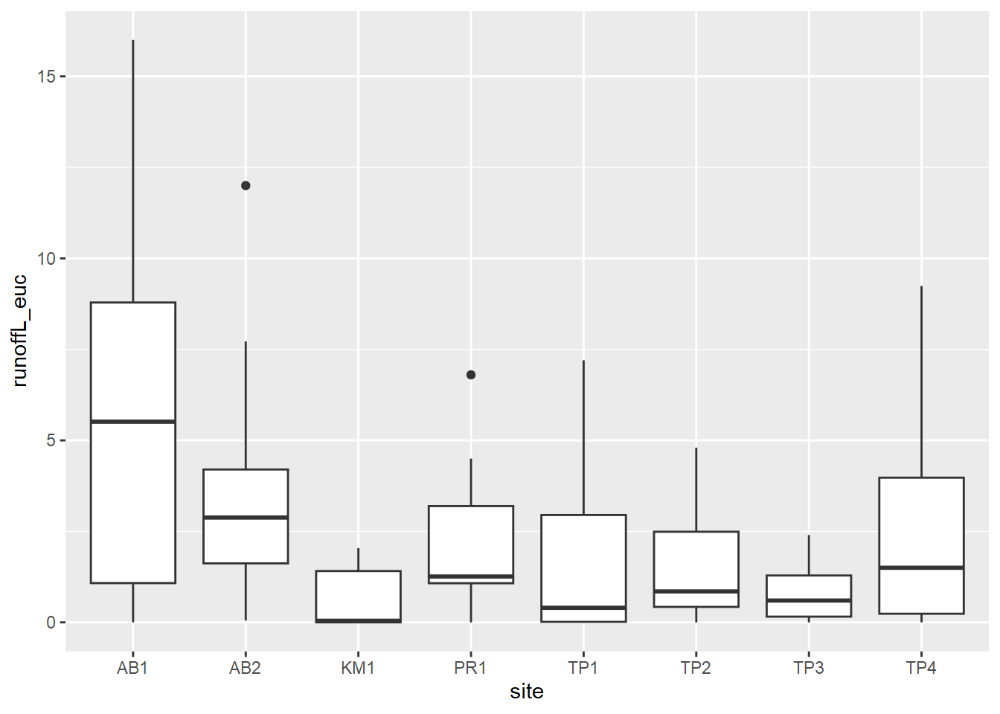

Chapter 3 Data Abstraction
Abstracting data from large data sets (or even small ones) is critical to data science. The most common first step to visualization is abstracting the data in a form that allows for the visualization goal in mind. If you’ve ever worked with data in spreadsheets, you commonly will be faced with some kind of data manipulation to create meaningful graphs, unless that spreadsheet is specifically designed for it, but then doing something else with the data is going to require some work.

FIGURE 3.1: Visualization of some abstracted data from the EPA Toxic Release Inventory
Figure 3.1 started with abstracting some data from
EPA’s Toxic Release Inventory (TRI) program, which holds data reported
from a large number of facilities that must report either “stack” or
“fugitive” air. Some of the abstraction had already happened when I used
the EPA website to download data for particular years and only in
California. But there’s more we need to do, and we’ll want to use some
dplyr functions to help with it.
At this point, we’ve learned the basics of working with the R language. From here we’ll want to explore how to analyze data, statistically, spatially, and temporally. One part of this is abstracting information from existing data sets by selecting variables and observations and summarizing their statistics.
In the previous chapter, we learned some abstraction methods in base R, such as selecting parts of data frames and applying some functions across the data frame. There’s a lot we can do with these methods, and they continue to be developed and improved. We’ll continue to use them, but they can employ some fairly arcane language. There are many packages that extend R’s functionality, but some of the most important for data science can be found in the various packages of “The Tidyverse” (Wickham and Grolemund 2016), which has the philosophy of making data manipulation more intuitive.
We’ll start with dplyr, which includes an array of
data manipulation tools, including select for selecting variables,
filter for subsetting observations, summarize for reducing
variables to summary statistics, typically stratified by groups, and
mutate for creating new variables from mathematical expressions
from existing variables. Some dplyr tools such as data joins we’ll
look at later in the data transformation chapter.
3.1 The Tidyverse
The tidyverse refers to a suite of R packages developed at RStudio (now posit) (see https://posit.co and <https://r4ds.had.co.nz>) for facilitating data processing and analysis. While R itself is designed around exploratory data analysis, the tidyverse takes it further. Some of the packages in the tidyverse that are widely used are:
dplyr: data manipulation like a databasereadr: better methods for reading and writing rectangular datatidyr: reorganization methods that extend dplyr’s database capabilitiespurrr: expanded programming toolkit including enhanced “apply” methodstibble: improved data framestringr: string manipulation libraryggplot2: graphing system based on the grammar of graphics
In this chapter, we’ll be mostly exploring dplyr, with a few other
things thrown in like reading data frames with readr; and we’ll also
introduce a few other base R methods. For simplicity, we can just
include library(tidyverse) to get everything, and of course the base R
methods are already there.
3.2 Tibbles
Tibbles are an improved type of data frame
- part of the tidyverse
- serve the same purpose as a data frame, and all data frame operations work
Advantages
- display better
- can be composed of more complex objects like lists, etc.
- can be grouped
There multiple ways to create a tibble:
- Reading from a CSV using
read_csv(). Note the underscore, a function naming convention in the tidyverse. - Using
tibble()to either build from vectors or from scratch, or convert from a different type of data frame. - Using
tribble()to build in code from scratch. - Using various tidyverse functions that return tibbles.
3.2.1 Building a tibble from vectors
We’ll start by looking at a couple of built-in character vectors (there are lots of things like this in R):
letters: lowercase lettersLETTERS: uppercase letters
## [1] "a" "b" "c" "d" "e" "f" "g" "h" "i" "j" "k" "l" "m" "n" "o" "p" "q" "r" "s"
## [20] "t" "u" "v" "w" "x" "y" "z"## [1] "A" "B" "C" "D" "E" "F" "G" "H" "I" "J" "K" "L" "M" "N" "O" "P" "Q" "R" "S"
## [20] "T" "U" "V" "W" "X" "Y" "Z"… then make a tibble of letters, LETTERS, and two random sets of
26 values, one normally distributed, the other
uniform:
norm <- rnorm(26)
unif <- runif(26)
library(tidyverse)
tibble26 <- tibble(letters,LETTERS,norm,unif)
tibble26## # A tibble: 26 × 4
## letters LETTERS norm unif
## <chr> <chr> <dbl> <dbl>
## 1 a A 1.38 0.835
## 2 b B 0.529 0.243
## 3 c C 0.692 0.808
## 4 d D 0.881 0.160
## 5 e E -0.288 0.830
## 6 f F 0.853 0.103
## 7 g G 1.95 0.589
## 8 h H 0.392 0.496
## 9 i I 0.260 0.00458
## 10 j J 0.746 0.964
## # ℹ 16 more rowsSee section 9.2.3 for more on creating random (or rather pseudo-random) numbers in R.
3.2.1.1 Combining built-in data of various types
As we’re starting to see, there are a lot of data sets that are built into base R. They tend to be fairly simple structures like vectors and time series, shown as “Values” in the Environment tab of RStudio. But we might want to combine them into tibbles to make them more useful.
Have a look at the various data sets that together form data from the 50
United States: character vectors state.name and state.abb, factors
state.region, and a state.x77 matrix.
Use ?state to learn more about this data
You’ll find that they each have a length of 50, and they happen to be in
the same order by state. That will make it easy to combine them. Note in
the following code that we provide better names for the vectors, but use
as_tibble to get all of the variables, with their names, from the
matrix state.x77.
## # A tibble: 6 × 11
## Name Abb Region Population Income Illiteracy `Life Exp` Murder `HS Grad`
## <chr> <chr> <fct> <dbl> <dbl> <dbl> <dbl> <dbl> <dbl>
## 1 Alabama AL South 3615 3624 2.1 69.0 15.1 41.3
## 2 Alaska AK West 365 6315 1.5 69.3 11.3 66.7
## 3 Arizona AZ West 2212 4530 1.8 70.6 7.8 58.1
## 4 Arkansas AR South 2110 3378 1.9 70.7 10.1 39.9
## 5 Califor… CA West 21198 5114 1.1 71.7 10.3 62.6
## 6 Colorado CO West 2541 4884 0.7 72.1 6.8 63.9
## # ℹ 2 more variables: Frost <dbl>, Area <dbl>Use the methods you’ve learned in RStudio to see what this tibble contains, and note that not all variables are displayed in the simple
head()output above. Can you findFrost, the “mean number of days with minimum temperature below freezing (1931-1960) in capital or large city”? Those would probably be fewer now.
3.2.2 tribble
As long as you don’t let them multiply in your starship,
tribbles are handy for creating tibbles. (Or rather the
tribble function is a handy way to create tibbles in code.) You simply
create the variable names with a series of entries starting with a
tilde, then the data is entered one row at a time. If you line them all
up in your code one row at a time, it’s easy to enter the data
accurately (Table 3.1).
peaks <- tribble(
~peak, ~elev, ~longitude, ~latitude,
"Mt. Whitney", 4421, -118.2, 36.5,
"Mt. Elbert", 4401, -106.4, 39.1,
"Mt. Hood", 3428, -121.7, 45.4,
"Mt. Rainier", 4392, -121.8, 46.9)
knitr::kable(peaks, caption = 'Peaks tibble')| peak | elev | longitude | latitude |
|---|---|---|---|
| Mt. Whitney | 4421 | -118.2 | 36.5 |
| Mt. Elbert | 4401 | -106.4 | 39.1 |
| Mt. Hood | 3428 | -121.7 | 45.4 |
| Mt. Rainier | 4392 | -121.8 | 46.9 |
3.2.3 read_csv
The read_csv function does somewhat the same thing as
read.csv in base R, but creates a tibble instead of a data.frame, and
has some other properties we’ll look at below.
Note that the code below accesses data we’ll be using a lot, from EPA Toxic Release Inventory (TRI) data. If you want to keep this data organized in a separate project, you might consider creating a new
air_qualityproject. This is optional, and you can get by with staying in one project since all of our data will be accessed from theigiscipackage. But in your own work, you will find it useful to create separate projects to keep things organized with your code and data together.
library(tidyverse); library(igisci)
TRI87 <- read_csv(ex("TRI/TRI_1987_BaySites.csv"))
TRI87df <- read.csv(ex("TRI/TRI_1987_BaySites.csv"))
TRI87b <- tibble(TRI87df)
identical(TRI87, TRI87b)## [1] FALSENote that they’re not identical. So what’s the difference between
read_csv and read.csv? Why would we
use one over the other? Since their names are so similar, you may
accidentally choose one or the other. Some things to consider:
- To use read_csv, you need to load the
readrortidyverselibrary, or usereadr::read_csv. - The
read.csvfunction “fixes” some things and sometimes that might be desired: problematic variable names likeMLY-TAVG-NORMALbecomeMLY.TAVG.NORMAL– but this may create problems if those original names are a standard designation. - With
read.csv, numbers stored as characters are converted to numbers: “01” becomes 1, “02” becomes 2, etc. - There are other known problems that read_csv avoids.
Recommendation: Use read_csv and write_csv.
You can still just call tibbles “data frames”, since they are still data frames, and in this book we’ll follow that practice.
3.3 Summarizing variable distributions
A simple statistical summary is very easy to
do in R, and we’ll use eucoak data in the
igisci package from a study of comparative runoff and erosion under
eucalyptus and oak canopies (Thompson et al. 2016). In this study (Figure
3.2), we looked at the amount of runoff and
erosion captured in Gerlach troughs on paired eucalyptus and oak sites
in the San Francisco Bay Area. You might consider creating a eucoak
project, since we’ll be referencing this data set in several places.

FIGURE 3.2: Euc-Oak paired plot runoff and erosion study (Thompson et al. (2016))
## site site # date month rain_mm
## Length :90 Min. :1.000 Length :90 Length :90 Min. : 1.00
## N.unique : 8 1st Qu.:2.000 N.unique :25 N.unique : 7 1st Qu.:16.00
## N.blank : 0 Median :4.000 N.blank : 0 N.blank : 0 Median :28.50
## Min.nchar: 3 Mean :4.422 Min.nchar: 8 Min.nchar: 8 Mean :37.99
## Max.nchar: 3 3rd Qu.:6.000 Max.nchar:10 Max.nchar: 9 3rd Qu.:63.25
## Max. :8.000 Max. :99.00
## NAs :18
## rain_oak rain_euc runoffL_oak runoffL_euc
## Min. : 1.00 Min. : 1.00 Min. : 0.000 Min. : 0.00
## 1st Qu.:16.00 1st Qu.:14.75 1st Qu.: 0.000 1st Qu.: 0.07
## Median :30.50 Median :30.00 Median : 0.450 Median : 1.20
## Mean :35.08 Mean :34.60 Mean : 2.032 Mean : 2.45
## 3rd Qu.:50.50 3rd Qu.:50.00 3rd Qu.: 2.800 3rd Qu.: 3.30
## Max. :98.00 Max. :96.00 Max. :14.000 Max. :16.00
## NAs :2 NAs :2 NAs :5 NAs :3
## slope_oak slope_euc aspect_oak aspect_euc
## Min. : 9.00 Min. : 9.00 Min. :100.0 Min. :106.0
## 1st Qu.:12.00 1st Qu.:12.00 1st Qu.:143.0 1st Qu.:175.0
## Median :24.50 Median :23.00 Median :189.0 Median :196.5
## Mean :21.62 Mean :19.34 Mean :181.9 Mean :191.2
## 3rd Qu.:30.50 3rd Qu.:25.00 3rd Qu.:220.0 3rd Qu.:224.0
## Max. :32.00 Max. :31.00 Max. :264.0 Max. :296.0
##
## surface_tension_oak surface_tension_euc runoff_rainfall_ratio_oak
## Min. :37.40 Min. :28.51 Min. :0.00000
## 1st Qu.:72.75 1st Qu.:32.79 1st Qu.:0.00000
## Median :72.75 Median :37.40 Median :0.02045
## Mean :68.35 Mean :43.11 Mean :0.05358
## 3rd Qu.:72.75 3rd Qu.:56.41 3rd Qu.:0.08485
## Max. :72.75 Max. :72.75 Max. :0.42000
## NAs :22 NAs :22 NAs :5
## runoff_rainfall_ratio_euc
## Min. :0.000000
## 1st Qu.:0.003027
## Median :0.047619
## Mean :0.065902
## 3rd Qu.:0.083603
## Max. :0.335652
## NAs :3In the summary output, how are character variables handled differently from numeric ones?
Remembering what we discussed in the previous chapter, consider the
site variable (Figure ??), and in particular
its Length. Looking at the table, what does that length represent?
There are a couple of ways of removing duplicates from a data frame,
such as the unique() and the similar
dplyr::distinct() functions. In the Transformation
chapter, we’ll use this as one step in paring down big data from
groundwater wells.
We could also use unique() to simply have a quick look at our list of
subcanopy runoff measurement sites, which helps us consider using site
as a factor for statistical analysis. Consider what these return:
## [1] "AB1" "AB2" "KM1" "PR1" "TP1" "TP2" "TP3" "TP4"## [1] AB1 AB1 AB1 AB1 AB1 AB1 AB1 AB1 AB1 AB1 AB1 AB1 AB2 AB2 AB2 AB2 AB2 AB2 AB2
## [20] AB2 AB2 AB2 AB2 AB2 KM1 KM1 KM1 KM1 KM1 KM1 KM1 KM1 KM1 KM1 KM1 KM1 PR1 PR1
## [39] PR1 PR1 PR1 PR1 PR1 PR1 PR1 PR1 TP1 TP1 TP1 TP1 TP1 TP1 TP1 TP1 TP1 TP1 TP1
## [58] TP2 TP2 TP2 TP2 TP2 TP2 TP2 TP2 TP2 TP2 TP2 TP3 TP3 TP3 TP3 TP3 TP3 TP3 TP3
## [77] TP3 TP3 TP3 TP4 TP4 TP4 TP4 TP4 TP4 TP4 TP4 TP4 TP4 TP4
## Levels: AB1 AB2 KM1 PR1 TP1 TP2 TP3 TP43.3.1 Stratifying variables by site using a Tukey box plot
A good way to look at variable distributions stratified by a sample site factor is the Tukey box plot (Figure 3.3). We’ll be looking more at this and other visualization methods in the next chapter.

FIGURE 3.3: Tukey boxplot of runoff under eucalyptus canopy
3.4 Database operations
As part of exploring our data, we’ll typically simplify or reduce it for our purposes. The following methods are quickly discovered to be essential as part of exploring and analyzing data.
- select variable columns you want to retain with
select - filter observations using logic, such as
population \> 10000, withfilter - subset data to do both filtering and variable selection, with
base R’s
subset - add new variables and assign their values with
mutate - sort rows based on a field with
arrange - summarize by group
3.4.1 Select, mutate, and the pipe
Read the pipe operator %>% as “and
then…” This is bigger than it sounds and opens up many possibilities.
You can also use
|>as the pipe operator. Once you get used to where the|character is on your keyboard, you’ll find that it makes your code a bit easier to read. Every character adds up when you’re interpreting code.
See the example below, and observe how the expression becomes several lines long. In the process, we’ll see examples of new variables with mutate and selecting (and in the process ordering) variables (Table 3.2).
runoff <- eucoakrainfallrunoffTDR %>%
mutate(Date = as.Date(date,"%m/%d/%Y"),
rain_subcanopy = (rain_oak + rain_euc)/2) %>%
dplyr::select(site, Date, rain_mm, rain_subcanopy,
runoffL_oak, runoffL_euc, slope_oak, slope_euc)| site | Date | rain_mm | rain_subcanopy | runoffL_oak | runoffL_euc | slope_oak | slope_euc |
|---|---|---|---|---|---|---|---|
| AB1 | 2006-11-08 | 29 | 29.0 | 4.7900 | 6.70000 | 32 | 31 |
| AB1 | 2006-11-12 | 22 | 18.5 | 3.2000 | 4.30000 | 32 | 31 |
| AB1 | 2006-11-29 | 85 | 65.0 | 9.7000 | 16.00000 | 32 | 31 |
| AB1 | 2006-12-12 | 82 | 87.5 | 14.0000 | 14.20000 | 32 | 31 |
| AB1 | 2006-12-28 | 43 | 54.0 | 9.7472 | 4.32532 | 32 | 31 |
| AB1 | 2007-01-29 | 7 | 54.0 | 1.4000 | 0.00000 | 32 | 31 |
Another way of thinking of the pipe that is very useful is that whatever goes before it becomes the first parameter for any functions that follow. So in the example above:
- The parameter
eucoakrainfallrunoffTDRbecomes the first formutate(), then - The result of the
mutate()becomes the first parameter fordplyr::select()
To just rename a variable, use
renameinstead ofmutate. It will stay in position.
3.4.1.1 Review: creating penguins from penguins_raw
To review some of these methods, it’s useful to consider how the
penguins data frame was created from the more complex penguins_raw data
frame, both of which are part of the
palmerpenguins package (Horst et al. (2020)). First
let’s look at palmerpenguins::penguins_raw:
## studyName Sample Number Species Region
## Length :344 Min. : 1.00 Length :344 Length :344
## N.unique : 3 1st Qu.: 29.00 N.unique : 3 N.unique : 1
## N.blank : 0 Median : 58.00 N.blank : 0 N.blank : 0
## Min.nchar: 7 Mean : 63.15 Min.nchar: 33 Min.nchar: 6
## Max.nchar: 7 3rd Qu.: 95.25 Max.nchar: 41 Max.nchar: 6
## Max. :152.00
##
## Island Stage Individual ID Clutch Completion
## Length :344 Length :344 Length :344 Length :344
## N.unique : 3 N.unique : 1 N.unique :190 N.unique : 2
## N.blank : 0 N.blank : 0 N.blank : 0 N.blank : 0
## Min.nchar: 5 Min.nchar: 18 Min.nchar: 4 Min.nchar: 2
## Max.nchar: 9 Max.nchar: 18 Max.nchar: 6 Max.nchar: 3
##
##
## Date Egg Culmen Length (mm) Culmen Depth (mm) Flipper Length (mm)
## Min. :2007-11-09 Min. :32.10 Min. :13.10 Min. :172.0
## 1st Qu.:2007-11-28 1st Qu.:39.23 1st Qu.:15.60 1st Qu.:190.0
## Median :2008-11-09 Median :44.45 Median :17.30 Median :197.0
## Mean :2008-11-27 Mean :43.92 Mean :17.15 Mean :200.9
## 3rd Qu.:2009-11-16 3rd Qu.:48.50 3rd Qu.:18.70 3rd Qu.:213.0
## Max. :2009-12-01 Max. :59.60 Max. :21.50 Max. :231.0
## NAs :2 NAs :2 NAs :2
## Body Mass (g) Sex Delta 15 N (o/oo) Delta 13 C (o/oo)
## Min. :2700 Length :344 Min. : 7.632 Min. :-27.02
## 1st Qu.:3550 N.unique : 2 1st Qu.: 8.300 1st Qu.:-26.32
## Median :4050 N.blank : 0 Median : 8.652 Median :-25.83
## Mean :4202 Min.nchar: 4 Mean : 8.733 Mean :-25.69
## 3rd Qu.:4750 Max.nchar: 6 3rd Qu.: 9.172 3rd Qu.:-25.06
## Max. :6300 NAs : 11 Max. :10.025 Max. :-23.79
## NAs :2 NAs :14 NAs :13
## Comments
## Length :344
## N.unique : 10
## N.blank : 0
## Min.nchar: 18
## Max.nchar: 68
## NAs :290
## Now let’s create the simpler penguins data frame. We’ll use rename for a
couple, but most variables require mutation to manipulate strings (we’ll
get to that later), create factors, or convert to integers. And we’ll
rename some variables to avoid using backticks (the backward single
quotation mark accessed just to the left of the 1 key and below the
Esc key, and what you can use in markdown to create a monospaced font
as I just used for 1 and Esc).
penguins <- penguins_raw %>%
rename(bill_length_mm = `Culmen Length (mm)`,
bill_depth_mm = `Culmen Depth (mm)`) %>%
mutate(species = factor(word(Species)),
island = factor(Island),
flipper_length_mm = as.integer(`Flipper Length (mm)`),
body_mass_g = as.integer(`Body Mass (g)`),
sex = factor(str_to_lower(Sex)),
year = as.integer(year(ymd(`Date Egg`)))) %>%
dplyr::select(species, island, bill_length_mm, bill_depth_mm,
flipper_length_mm, body_mass_g, sex, year)
summary(penguins)## species island bill_length_mm bill_depth_mm
## Adelie :152 Biscoe :168 Min. :32.10 Min. :13.10
## Chinstrap: 68 Dream :124 1st Qu.:39.23 1st Qu.:15.60
## Gentoo :124 Torgersen: 52 Median :44.45 Median :17.30
## Mean :43.92 Mean :17.15
## 3rd Qu.:48.50 3rd Qu.:18.70
## Max. :59.60 Max. :21.50
## NAs :2 NAs :2
## flipper_length_mm body_mass_g sex year
## Min. :172.0 Min. :2700 female:165 Min. :2007
## 1st Qu.:190.0 1st Qu.:3550 male :168 1st Qu.:2007
## Median :197.0 Median :4050 NAs : 11 Median :2008
## Mean :200.9 Mean :4202 Mean :2008
## 3rd Qu.:213.0 3rd Qu.:4750 3rd Qu.:2009
## Max. :231.0 Max. :6300 Max. :2009
## NAs :2 NAs :2Unfortunately, they don’t end up as exactly identical, though all of the variables are identical as vectors:
## [1] FALSE3.4.1.2 Helper functions for dplyr::select()
In the select() example above, we listed all of the
variables, but there are a variety of helper functions for using logic
to specify which variables to select:
contains("_")or any substring of interest in the variable namestarts_with("runoff")ends_with("euc")everything()matches()a regular expressionnum_range("x",1:5)for the common situation where a series of variable names combine a string and a numberone_of(myList)for when you have a group of variable names- range of variables: e.g.
runoffL_oak:slope_euccould have followedrain_subcanopyabove - all but: preface a variable or a set of variable names with
-to select all others
3.4.2 Filtering observations
filter lets you select observations that meet criteria,
similar to an SQL WHERE clause (Table
3.3).
| site | Date | rain_mm | rain_subcanopy | runoffL_oak | runoffL_euc | slope_oak | slope_euc |
|---|---|---|---|---|---|---|---|
| AB1 | 2007-04-23 | NA | 33.5 | 6.94488 | 9.19892 | 32.0 | 31 |
| AB1 | 2007-05-05 | NA | 31.0 | 6.33568 | 7.43224 | 32.0 | 31 |
| AB2 | 2007-04-23 | 23 | 35.5 | 4.32000 | 2.88000 | 24.0 | 25 |
| AB2 | 2007-05-05 | 11 | 25.5 | 4.98000 | 3.30000 | 24.0 | 25 |
| KM1 | 2007-04-23 | NA | 37.0 | 1.56000 | 2.04000 | 30.5 | 25 |
| KM1 | 2007-05-05 | 28 | 22.0 | 1.32000 | 1.32000 | 30.5 | 25 |
3.4.2.1 Filtering out NA with !is.na
Here’s a really important one. There are many times you
need to avoid NAs. We thus commonly see summary statistics using
na.rm = TRUE in order to ignore NAs when calculating a statistic
like mean.
To simply filter out NAs from a vector or a variable use a filter:
3.4.3 Subsetting data with base R’s subset
We’ve looked at selecting variables and filtering observations, both
examples of subsetting data. We also learned in the previous chapter
on base R methods that there are lots of ways of subsetting data, such
as using accessors like [] and $. We’ll look at another base R
method that can do both variable selection and observation filtering in
one step, which in some cases you might prefer.
Let’s look at a problem where we’re subsetting the
palmerpenguins::pengins data to just abstract the species and body
mass of female penguins. We’d need to use both filter and select to
accomplish this, but of course the pipe operator helps:
library(palmerpenguins); library(dplyr)
penguins |> filter(sex=="female") |> select(species,body_mass_g)The exact same result can be achieved with base R’s subset function,
which if we use a pipe operator looks pretty similar:
## # A tibble: 165 × 2
## species body_mass_g
## <fct> <int>
## 1 Adelie 3800
## 2 Adelie 3250
## 3 Adelie 3450
## 4 Adelie 3625
## 5 Adelie 3200
## 6 Adelie 3700
## 7 Adelie 3450
## 8 Adelie 3325
## 9 Adelie 3400
## 10 Adelie 3800
## # ℹ 155 more rowsAs a review, how would you do this without the pipe?
Given the option of either using filter and select or just subset
in the above example, it’s just personal preference, which is often
driven by the desire to make code readable, and that can go either way.
Then there’s the desire to reduce the size of what functions you want to
remember, which can also go either way; you still need to know what
“select” means.
Let’s take our example a bit further and use subset to pick the most
massive individual female penguin in the dataset. You could also do this
with filter, but the key is using the max function.
library(palmerpenguins)
penguins |> subset(sex=="female", select=c(species,body_mass_g)) |>
subset(body_mass_g==max(body_mass_g))## # A tibble: 2 × 2
## species body_mass_g
## <fct> <int>
## 1 Gentoo 5200
## 2 Gentoo 5200In this case, there was a tie between the two most massive individuals.
It shouldn’t surprise us that there are lots of ways of subsetting data in R, since doing so helps us satisfy a key requirement of data science: being able to wrangle big data into something that is able to be visualized and understood.
3.4.4 Writing a data frame to a csv
Let’s say you have created a data frame, maybe with read_csv
runoff20062007 <- read_csv(ex("eucoak/eucoakrainfallrunoffTDR.csv"))
Then you do some processing to change it, maybe adding variables,
reorganizing, etc., and you want to write out your new eucoak, so you
just need to use write_csv
write_csv(eucoak, "data/tidy_eucoak.csv")
Note the use of a data folder
data: Remember that your default workspace (wdfor working directory) is where your project file resides (check what it is withgetwd()), so by default you’re saving things in that wd. To keep things organized the above code is placing data in a data folder within the wd.
3.4.5 Summarize by group
You’ll find that you need to
use this all the time with real data. Let’s say you have a bunch of
data where some categorical variable is defining a grouping, like our
site field in the eucoak data. This is a form of stratifying our
data. We’d like to just create average slope, rainfall,
and runoff for each site. Note that it involves two steps, first
defining which field defines the group, then the various summary
statistics we’d like to store. In this case, all of the slopes under
oak remain the same for a given site – it’s a site characteristic
– and the same applies to the euc site, so we can just grab the first
value (mean would have also worked of course) (Table
3.4).
eucoakSiteAvg <- runoff %>%
group_by(site) %>%
summarize(
rain = mean(rain_mm, na.rm = TRUE),
rain_subcanopy = mean(rain_subcanopy, na.rm = TRUE),
runoffL_oak = mean(runoffL_oak, na.rm = TRUE),
runoffL_euc = mean(runoffL_euc, na.rm = TRUE),
slope_oak = first(slope_oak),
slope_euc = first(slope_euc)
)| site | rain | rain_subcanopy | runoffL_oak | runoffL_euc | slope_oak | slope_euc |
|---|---|---|---|---|---|---|
| AB1 | 48.37500 | 43.08333 | 6.8018364 | 6.026523 | 32.0 | 31 |
| AB2 | 34.08333 | 35.37500 | 4.9113636 | 3.654545 | 24.0 | 25 |
| KM1 | 48.00000 | 36.12500 | 1.9362500 | 0.592500 | 30.5 | 25 |
| PR1 | 56.50000 | 37.56250 | 0.4585714 | 2.310000 | 27.0 | 23 |
| TP1 | 38.36364 | 30.04545 | 0.8772727 | 1.657273 | 9.0 | 9 |
| TP2 | 34.33333 | 32.86364 | 0.0954545 | 1.525454 | 12.0 | 10 |
Summarizing by group with TRI data
library(igisci)
TRI_BySite <- read_csv(ex("TRI/TRI_2017_CA.csv")) %>%
mutate(all_air = `5.1_FUGITIVE_AIR` + `5.2_STACK_AIR`) %>%
filter(all_air > 0) %>%
group_by(FACILITY_NAME) %>%
summarize(
FACILITY_NAME = first(FACILITY_NAME),
air_releases = sum(all_air, na.rm = TRUE),
mean_fugitive = mean(`5.1_FUGITIVE_AIR`, na.rm = TRUE),
LATITUDE = first(LATITUDE), LONGITUDE = first(LONGITUDE))Integer variables might be used to define categories or groups. Down the road, we’ll run into situations where numeric variables might be used to define groups, such as integer days of the year we’ll find useful in studying time series, but could also be zip codes, census tracts, or other spatial enumeration units. Note that these are discrete, not continuous values.
3.4.6 Count
The count function is a simple variant on summarizing by
group, since the only statistic is the count of events. The factor to
group by is simply provided as a parameter: count(factor).
## # A tibble: 2 × 2
## tree n
## <chr> <int>
## 1 euc 90
## 2 oak 90Another way to create a count is to use n():
## # A tibble: 2 × 2
## tree n
## <chr> <int>
## 1 euc 90
## 2 oak 903.4.7 Sorting after summarizing
Using the marine debris data from the Marine
Debris Monitoring and Assessment Project (Marine Debris Program, n.d.), we can use
arrange to sort by latitude, so we can see the beaches from south to
north along the Pacific coast.
shorelineLatLong <- ConcentrationReport %>%
group_by(`Shoreline Name`) %>%
summarize(
latitude = mean((`Latitude Start`+`Latitude End`)/2),
longitude = mean((`Longitude Start`+`Longitude End`)/2)
) %>%
arrange(latitude)
shorelineLatLong## # A tibble: 38 × 3
## `Shoreline Name` latitude longitude
## <chr> <dbl> <dbl>
## 1 Aimee Arvidson 33.6 -118.
## 2 Balboa Pier #2 33.6 -118.
## 3 Bolsa Chica 33.7 -118.
## 4 Junipero Beach 33.8 -118.
## 5 Malaga Cove 33.8 -118.
## 6 Zuma Beach, Malibu 34.0 -119.
## 7 Zuma Beach 34.0 -119.
## 8 Will Rodgers 34.0 -119.
## 9 Carbon Beach 34.0 -119.
## 10 Nicholas Canyon 34.0 -119.
## # ℹ 28 more rows3.4.8 The dot operator
The dot (.) operator
refers to here, similar to UNIX syntax for accessing files in the
current folder where the path is "./filename". In a piped sequence,
you might need to reference the object (like the data frame) the pipe is
using, as you can see in the following code.
- The advantage of the pipe is you don’t have to keep referencing the data frame.
- The dot is then used to connect to items inside the data frame
TRI87 <- read_csv(ex("TRI/TRI_1987_BaySites.csv"))
stackrate <- TRI87 %>%
mutate(stackrate = stack_air/air_releases) %>%
.$stackrate
head(stackrate)## [1] 0.0000000 0.0000000 0.0000000 0.0000000 0.6666667 1.00000003.5 String abstraction
Character string manipulation is surprisingly
critical to data analysis, and so the stringr
package was developed to provide a wider array of string processing
tools than what is in base R, including functions for detecting matches,
subsetting strings, managing lengths, replacing substrings with other
text, and joining, splitting, and sorting strings.
We’ll look at some of the stringr functions, but a good way to learn
about the wide array of functions is through the cheat sheet that can be
downloaded from https://www.rstudio.com/resources/cheatsheets/
3.5.1 Detecting matches
These functions look for patterns within existing strings, which can then be used subset observations based on those patterns.
str_detectdetects patterns in a string, returns true or false if detectedstr_locatedetects patterns in a string, returns start and end position if detected, or NA if notstr_whichreturns the indices of strings that match a patternstr_countcounts the number of matches in each string
## [1] FALSE FALSE FALSE FALSE FALSE FALSE FALSE FALSE FALSE FALSE FALSE FALSE
## [13] FALSE FALSE FALSE FALSE FALSE FALSE FALSE FALSE FALSE FALSE FALSE FALSE
## [25] FALSE FALSE FALSE FALSE FALSE FALSE FALSE FALSE FALSE FALSE FALSE FALSE
## [37] FALSE FALSE FALSE FALSE FALSE FALSE TRUE FALSE FALSE TRUE FALSE FALSE
## [49] FALSE FALSE FALSE FALSE FALSE FALSE FALSE FALSE FALSE FALSE FALSE FALSE
## [61] FALSE FALSE FALSE FALSE FALSE FALSE TRUE FALSE FALSE FALSE FALSE FALSE
## [73] FALSE FALSE FALSE FALSE FALSE FALSE FALSE FALSE
## [1] 43 46 67
## [1] "kumquat" "loquat" "quince"Note that str_locate returns a matrix with rows for each item where
the substring is located with both start and end locations.
## [1] "avocado" "banana" "blackcurrant" "canary melon" "cantaloupe"
## [6] "guava" "mandarine" "papaya" "pomegranate" "rambutan"
## [11] "salal berry" "satsuma" "tamarillo"
## start end
## [1,] 1 1
## [2,] 2 2
## [3,] 3 3
## [4,] 2 2
## [5,] 2 2
## [6,] 3 3
## [7,] 2 2
## [8,] 2 2
## [9,] 7 7
## [10,] 2 2
## [11,] 2 2
## [12,] 2 2
## [13,] 2 2The str_locate_all function carries this further and finds all
locations of the substrings within the string.
## [1] "banana" "papaya"
## [[1]]
## start end
## [1,] 2 2
## [2,] 4 4
## [3,] 6 6
##
## [[2]]
## start end
## [1,] 2 2
## [2,] 4 4
## [3,] 6 6## [1] "kumquat" "loquat" "quince"
## start end
## [1,] 4 5
## [2,] 3 4
## [3,] 1 23.5.2 Subsetting strings
Subsetting in this case includes its normal use of abstracting the observations specified by a match (similar to a filter for data frames), or just a specified part of a string specified by start and end character positions, or the part of the string that matches an expression.
str_subextracts a part of a string from a start to an end character positionstr_subsetreturns the strings that contain a pattern matchstr_extractreturns the first (or ifstr_extract_allthen all matches) pattern matchesstr_matchreturns the first (or_all) pattern match as a matrixstr_removeremoves a specific substring (not on the cheat sheet, but handy)
## [1] "kumquat" "loquat" "quince"
## [1] "ku" "lo" "qu"## [1] "94"
## [1] "u" "o" "u"
## [1] "bread" "dragon" "grape" "jack" "kiwi " "passion" "star "
## [8] "ugli "3.5.3 String length
The length of strings is often useful in an analysis process, either just knowing the length as an integer, or purposefully increasing or reducing it.
str_lengthsimply returns the length of the string as an integer
## [1] "kumquat" "loquat" "quince"
## [1] 7 6 6Don’t confuse str_length with length (from base R), the length of an object like a vector. Both are highly useful.
## [1] 80## [1] 3Using str_locate with str_length:
name <- "Inigo Montoya"
str_length(name)
firstname <- str_sub(name,1,str_locate(name," ")[1]-1)
firstname
lastname <- str_sub(name,str_locate(name," ")[1]+1,str_length(name))
lastname## [1] 13
## [1] "Inigo"
## [1] "Montoya"Padding and trimming lengths:
str_padadds a specified character (typically a space" ") to either end of a stringstr_trimremoves white space from either end of a string
Here’s an example str_pad and str_trim (in this case, reversing the
former):
## [1] " kumquat " " loquat " " quince "
## [1] "kumquat" "loquat" "quince"3.5.4 Replacing substrings with other text (“mutating” strings)
These methods range from converting case to replacing substrings.
str_to_lowerconverts strings to lowercasestr_to_upperconverts strings to uppercasestr_to_titlecapitalizes strings (makes the first character of each word uppercase)
## [1] "inigo montoya"
## [1] "INIGO MONTOYA"
## [1] "For Whom The Bell Tolls"str_replacereplaces the first matched pattern (or all withstr_replace_all) with a specified stringstr_suba special use of this function to replace substrings with a specified string
## [1] "kumzuat" "lozuat" "zuince"
## [1] "Diego Montoya"The replacement mode of
str_subused above may seem pretty tortuous and confusing. Why did we have to access[1]instr_locate(name," ")[1]? Experiment with what you get withstr_locate(name," ")itself, and maybe consult the help system with?str_locate(and run the examples), but you’ll find this is one that returns a matrix, and even if there’s only one item located will still have astartandendlocation. See what happens when you use it without accessing[1]. You’re seeing one effect of vectorization – reuse. It can be very confusing, but reuse of inputs is one of the (very useful but still confusing) properties of vectorization. In this case it creates duplication, creating a vector of names.
3.5.5 Concatenating and splitting
One very common string function is to concatenate strings, and somewhat less common is splitting them using a key separator like space, comma, or line end. One use of using str_c in the example below is to create a comparable join field based on a numeric character string that might need a zero or something at the left or right.
str_cThepaste()function in base R will work, but you might want the default separator setting to be “” (as doespaste0()) instead of" ", sostr_cis justpastewith a default “” separator, but you can also use" ".str_splitsplits a string into parts based upon the detection of a specified separator like space, comma, or line end. However, this ends up creating a list, which can be confusing to use. If you’re wanting to access a particular member of a list of words, thewordfunction is easier.wordlets you pick the first, second, or nth word in a string of words.
## [1] "for whom the bell tolls"## [[1]]
## [1] "for" "whom" "the" "bell" "tolls"## [1] "bell"… and of course, these methods can all be vectorized:
## [1] "The birch canoe slid on the smooth planks."
## [2] "Glue the sheet to the dark blue background."
## [3] "It's easy to tell the depth of a well."
## [4] "These days a chicken leg is a rare dish."## [1] "birch" "the" "easy" "days"Example of str_c use to modify a variable needed for a join:
csvPath <- system.file("extdata","CA/CA_MdInc.csv",package="igisci")
CA_MdInc <- read_csv(csvPath)
join_id <- str_c("0",CA_MdInc$NAME)
# could also use str_pad(CA_MdInc$NAME,1,side="left",pad="0")
head(CA_MdInc)## # A tibble: 6 × 3
## trID NAME HHinc2016
## <dbl> <dbl> <dbl>
## 1 6001400100 60014001 177417
## 2 6001400200 60014002 153125
## 3 6001400300 60014003 85313
## 4 6001400400 60014004 99539
## 5 6001400500 60014005 83650
## 6 6001400600 60014006 61597## [1] "060014001" "060014002" "060014003" "060014004" "060014005" "060014006"3.6 Dates and times with lubridate
Simply stated, the lubridate
package just makes it easier to work with dates and times. Dates and
times are more difficult to work with than numbers and character
strings, which is why lubridate was developed. The lubridate package
is excellent at detecting and reading in dates and times – it can
“parse” many forms. Spend some time to make sure you know how to use it.
We’ll be using dates and times a lot, since many data sets include time
stamps. See the cheat sheet for more information but the following
examples may demonstrate that it’s pretty easy to use, and does a good
job of making your job easier.
library(lubridate)
dmy("20 September 2020")
dmy_hm("20 September 2020 10:45")
mdy_hms("September 20, 2020 10:48")
mdy_hm("9/20/20 10:50")
mdy("9.20.20")## [1] "2020-09-20"
## [1] "2020-09-20 10:45:00 UTC"
## [1] "2020-09-20 20:10:48 UTC"
## [1] "2020-09-20 10:50:00 UTC"
## [1] "2020-09-20"start704 <- dmy_hm("24 August 2020 16:00")
end704 <- mdy_hm("12/18/2020 4:45 pm")
year(start704)
month(start704)
day(end704)
hour(end704)## [1] 2020
## [1] 8
## [1] 18
## [1] 16A bit of date math:
## Time difference of 116.0312 days
## [1] "2020-12-18"
## 16:45:00You will find that dates are typically displayed as yyyy-mm-dd, e.g. “2020-09-20” above. You can display them other ways of course, but it’s useful to write dates this way since they sort better, with the highest order coming first.
Calling functions explicitly with
::: Sometimes you need to specify the package and function name this way, for instance, if more than one package has a function of the same name. You can also use this method to call a function without having loaded its library. Due to multiple packages having certain common names (likeselect), it’s common to use this syntax, and you’ll find that we’ll usedplyr::select(...)throughout this book.
3.6.1 Dates used for annual time series
For obvious reasons, we’ll use lubridate a lot when we get to time
series. One date abstraction that will be particularly useful is day of
the year, which can be abstracted from a date object as yday, which
returns the day of the year starting with 1 for January 1 in any given
year. Note that as with all of the date objects, you need to work with
actual date objects, which we do in the following example, which creates
a simple data frame table of month, day and day of year, then displays a
subset that illustrates the utility:
library(lubridate)
library(tidyverse)
Jan1 <- ymd("2022-01-01")
Dec31 <- ymd("2022-12-31")
year2022 <- as_date(Jan1:Dec31)
ydayTable <- bind_cols(month=month(year2022),day=day(year2022),doy=yday(year2022))
ydayTable[27:35,] ## # A tibble: 9 × 3
## month day doy
## <dbl> <int> <dbl>
## 1 1 27 27
## 2 1 28 28
## 3 1 29 29
## 4 1 30 30
## 5 1 31 31
## 6 2 1 32
## 7 2 2 33
## 8 2 3 34
## 9 2 4 353.7 Extending abstractions with functions
We’ve explored ways of extending base R to facilitate data abstraction, mostly focusing on the tidyverse in this chapter. There are many other packages that provide special capabilities, but we can also write our own, as we explored in the last chapter. Even simple functions of a few lines of code can make our main code more readable.
We’ll look at a simple extension of the readxl::read_excel function. A
common practice in data logger spreadsheets is to have the variable
names in the first row and the units (like °C or mm in the second row.)
There’s no good way to make use of those units in a data frame, so we
typically will want to skip it. The read_excel function has a skip
parameter that lets us skip the first row, and also the col_names
parameter that allows us to either use the first row as variable names
(the default, TRUE), get default names (FALSE), or provide a vector
of variable names.
We’ll write a function that creates variable names out of the first two
rows, so includes the units with the original variable name by
vectorizing a paste0.
read_excel2 <- function(xl){
vnames <- read_excel(xl, n_max=0) |> names()
vunits <- read_excel(xl, n_max=0, skip=1) |> names()
read_excel(xl, skip=2, col_names=paste0(vnames,"_",vunits))
}Then this is a new function we can just use in our code later on. We’ll be reading this kind of data a lot, so even a short function can make our main code easier to read.
## # A tibble: 5,397 × 14
## `Decimal time_mgC m-2 s-1` `Day of Year_mmols m-2 s-1` `Hour of Day_W m-2`
## <dbl> <dbl> <dbl>
## 1 138 138 24
## 2 138. 138 0.5
## 3 138. 138 1
## 4 138. 138 1.5
## 5 138. 138 2
## 6 138. 138 2.5
## 7 138. 138 3
## 8 138. 138 3.5
## 9 138. 138 4
## 10 138. 138 4.5
## # ℹ 5,387 more rows
## # ℹ 11 more variables: `CO2 Flux_degC` <dbl>, `PAR_%` <dbl>, Qnet_degC <dbl>,
## # Tair_degC <dbl>, RH_deg <dbl>, `Tsoil 2cm_m s-1` <dbl>,
## # `Tsoil 10cm_mm` <dbl>, `wdir_m3 m-3` <dbl>, `wspd_mgC m-2 s-1` <dbl>,
## # `Rain_mmols m-2 s-1` <dbl>, `VWC_W m-2` <dbl>Note that this function accessed the
igisci::exfunction we’re using a lot. That function simply returns the path to the file, and that’s all we need as input to theread_excelfunction. It’s not always a good idea to write functions because we either need to make sure we run it, or include it in a package that we need to load. This example seemed worth it. There are many other functions you could build to do operations you need repeatedly, and some of them may get pretty complex, but you’ll want to decide which to build.
3.8 Exercises: Data Abstraction
Create an R Markdown document (.Rmd) to complete the exercise. For each question, start by copying in the question text below, then create two code chunks. The first will be used to set up libraries, read and produce data, and try methods. The code in the first chunk will probably have outputs in the form of data frame tables and graphics, but the final outputs are reserved for the second code chunk. When the .Rmd file is knitted, it should show the code for both chunks, but only the outputs from the second, which should produce a clean knitted result.
To do this use the following options for the first chunk: {r results="hide", warning=F, message=F, echo=T}. You can run the first code chunk to learn from what it produces, but only the second chunk (without those options) will produce your final results when you knit the document.
For a simple explanation of code chunk options, see https://yihui.org/knitr/options/.
There may also be questions to answer, which should go in the markdown section, just below the question.
Exercise 3.1 Create a tibble with 20 rows of two variables norm and unif with norm created with rnorm() and unif created with runif().
Consider how you might use similar methods to 3.2.2, and explain whether this might (or might not) be a good approach.
:
Code chunk output: your resulting tibble:
Exercise 3.2 Read in “TRI/TRI_2017_CA.csv” in two ways, as a normal data frame assigned to df and as a tibble assigned to tbl. Do not create an output from the code chunk; instead use the Environment tab to answer the question.
What field names result in the data frame and in the tibble for what’s listed in the CSV as
5.1_FUGITIVE_AIR? > df: tibble:
Exercise 3.3 Use the summary function or other methods to investigate the variables in either the data.frame or tibble you just created. While you can temporarily create outputs from your code chunk to investigate, after you have your the information needed to answer the question, comment out the code producing output: don’t display any output; just answer the question below.
What type of field and what values are assigned to
BIA_CODE? > :
Exercise 3.4 Create a boxplot of body_mass_g by species from the penguins data
frame in the palmerpenguins package (Horst et al. 2020), using methods in 3.3.1.
Exercise 3.5 Use select, mutate, and the pipe to create a penguinMass tibble where the only original variable retained is species, but with body_mass_kg created as \(\frac{1}{1000}\) the body_mass_g. The statement should start with penguinMass <- penguins and use a pipe plus the other functions after that.
The output should be the tibble created.
Exercise 3.6 Now, also with penguins, create FemaleChinstaps to include only the female Chinstrap penguins. Start with FemaleChinstraps <- penguins %>%.
Similarly, the output should be the resulting
FemaleChinstaps.
Exercise 3.7 Now, summarize by species groups to create mean and standard deviation variables from bill_length_mm, bill_depth_mm, flipper_length_mm, and body_mass_g. Preface the variable names with either avg. or sd. Include na.rm=T with all statistics function calls.
Similarly the output should be the resulting data frame.
Exercise 3.8 Sort the penguins by body_mass_g, and provide that output.
Exercise 3.9 Using stringr methods, detect and print out a vector of sites in theConcentrationReport that are parks (include the substring "Park" in the variable Shoreline Name), then detect and print out the longest shoreline name. See the method in 3.2 for identifying just a single result among duplicates.
Exercise 3.10 The sierraStations data frame has weather stations only in California, but includes “CA US” at the end of the name. Use dplyr and stringr methods to create a new STATION_NAME that truncates the name, removing that part at the end, and provide the resulting data frame as the only output.
Exercise 3.11 Use dplyr and lubridate methods to create a new date-type variable
sampleDate from the existing DATE character variable in
soilCO2_97, then use this to plot a graph of soil CO2 over time, with
sampleDate as x, and CO2pct as y. Then use code to answer the
question: What’s the length of time (time difference) from beginning to
end for this data set [Hint: two approaches might use sorting or max()
and min()]?